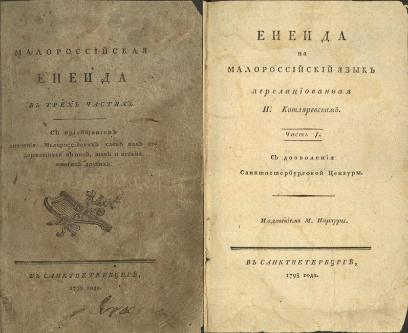
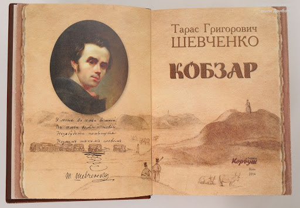
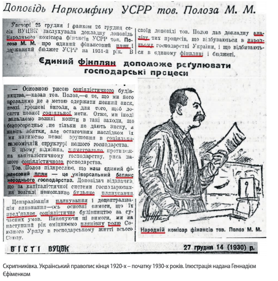

Історія походження української мови
Українська мова одна з 30–40 найбільш поширених мов світу, державна мова в Україні, мова українських меншин у багатьох країнах світу. Загальна кількість носіїв української мови дорівнює приблизно 40–45 млн, відповідно ця мова посідає 2-ге або 3-тє місце серед слов’янських мов щодо кількості мовців (на першому місці російська мова, на другому — українська або польська.).
Як слов’янська мова, українська належить до сім’ї індоєвропейських, поряд з романськими, германськими, кельтськими, грецькою, албанською, вірменською та (найближче спорідненими зі слов’янськими) балтійськими мовами. На підставі деяких спільних генетичних рис українська мова з початків наукової славістики в 19 ст. класифікується як член групи східнослов’янських мов (разом з білоруською й російською), яка протиставляється групам західнослов’янських (польська, кашубська, верхньо- та нижньолужицькі, словацька, чеська) та південнослов’янських (словенська, боснійсько-сербсько-хорватсько-чорногорська; македонська й болгарська) мов (тут не наводимо вимерлі індоєвропейські та слов’янські мови)
Але це протиставлення сьогодні вже є радше даниною традиції. Хоча класифікація української мови як «східнослов’янської» прийнятна й досі, сучасне мовознавство інтерпретує її вже інакше, ніж у рамках ранішої теорії генеалогічного дерева. Тоді українська мова описувалася як відгалуження праіндоєвропейського дерева й праслов’янської (можливо, через прабалтослов’янську) та прасхіднослов’янських гілок. Але на сьогодні остаточно спростовані теорії про «давньоруську мовну єдність». Уже за часів середньовічної Русі протоукраїнські діалекти відрізнялися від проторосійських.
Так само, як в історії інших слов’янських мов, зокрема мов православних слов’ян, особлива роль в історії української мови належить так званій церковнослов’янській мові (модерна назва, традиційно вона називалася просто «слов’янською»), першій слов’янській писемній та літературній мові (в умовному, середньовічному значенні). «Апостоли слов’ян» Кирило та Мефодій створили церковнослов’янську мову в 860-х роках, тобто ще за загальнослов’янської доби, на підґрунті південнослов’янських діалектів, які тоді були в ужитку в околицях їхнього рідного міста Фессалоніки (слов’янською — Солунь, тепер Салоніки, Греція), аби перекласти Біблію з грецької на мову зрозумілу слов’янам.
Роль літератури
У Росії українська мова у вигляді, близькому до народної мови, вживалася лише в рукописних творах низького стилю; «руська мова» та українська редакція церковнослов’янської мови вийшли з ужитку. Найважливіша новація, що пов’язана з виходом перших частин «Енеїди» Івана Котляревського 1798 року, полягає в тому, що це був надзвичайно успішний суто «українськомовний» друкований твір, який знайшов багатьох читачів та пізніше часто вважався початком нової доби в історії української мови.
Насправді в «Енеїді» І. Котляревський, який писав на підґрунті полтавського діалекту, несуттєво поламав класицистичні парадигми місця української мови в царині низького стилю, тоді як у «Наталці Полтавці» фактично вже запровадив ту нову парадигму сентименталізму (Наталка є благородною, при цьому українськомовною, героїнею з «простого народу»), яку Григорій Квітка-Основ’яненко (що писав на підставі слобідських діалектів) успішно розгорнув у своїй «Марусі». Однак справжній перелам в історії нової української літературної мови відбувся лише тоді, коли європейський романтизм та пов’язані з ним національні рухи, зокрема рух розбудови нових слов’янських літературних мов (передусім у чехів та сербів), охопив і українців.
Починаючи з публікації «Кобзаря» (1840 рік), поетичні твори Т. Шевченка, якого швидко визнали національним поетом українців, захоплювали сучасників не лише своїм змістом, але й своєю мовою, яка меншою мірою ґрунтувалася на діалектах рідної Шевченкові Наддніпрянської України, а більшою — на мові його літературних попередників та мови фольклору різних регіонів українськомовного ареалу.
З 1860-х років галицькі народовці під враженням Шевченкової мови стали приймати норми, які ґрунтувалися на південно-східніх діалектах (а не на рідних південно-західніх), водночас стали запроваджувати назви «Україна», «українці» й «українська мова» (хоч останні два вирази Т. Шевченко вживав вкрай нечасто) в новому, національному значенні.

П. Куліш створив новий правопис, який ліг в основу правопису новітньої української літературної мови й підкреслив окремішність української мови від російської. Реакцією російської адміністрації на дедалі рішучішу працю українських діячів були заборони цієї мови та її стандартизації.
У цій ситуації Галичина, де існували українськомовні школи й (з 1849) кафедри при університетах, де існували українськомовна преса й українськомовні видавництва, стала «українським П’ємонтом», що в ньому внаслідок плідної співпраці підавстрійських і підросійських українців українська мова ще до кінця 19 ст. стала повноцінною новітньою стандартною мовою.
Від більшовизму до сьогодення
Після Першої Світової війни українська мова стала офіційною в незалежній Україні між 1917 і 1920 роками. У радянській Україні вона зазнавала певної (неоднозначної) підтримки під час політики так званої «українізації», яку Сталін від самого початку (з 1923 року, з прелюдією після перших поразок більшовиків в Україні) оголосив як тимчасову політику (на одному рівні з Новою економічною політикою) і проти якої більшовицька влада завзято боролася, водночас з її декларативним пропагуванням (справа «Спілки Визволення України» 1929 року).

Сьогодні українська мова, попри велику кількість носіїв та доволі високий рівень стандартизації в різних наукових граматиках та словниках, належить до тих, чий стандарт порівняно слабкий. Поряд із чинними нормами доволі поширені, при цьому і в авторитетних виданнях, альтернативні норми, чия суть зазвичай полягає в різних компромісах чинних норм з харківськими. Окрім цього, тривала русифікація призвела до того, що багато українців не знає стандартної української мови достатньою мірою. У багатьох комунікативних сферах досі домінує російська мова, зокрема у великих містах півдня й сходу; в ужитку різні форми мішаного мовлення («суржик»), які часто впливають на українську стандартну мову.